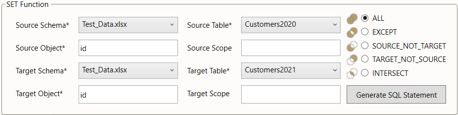

SET
Comparing tables with set operations
The SET generator is used to apply common set operations to tables. It can be used, for instance, to compare the set of objects in different versions of the same table (e.g. in test vs. production) or the sets of objects within different subsets (scopes) of the same table.
The SET generator may be used directly as a worksheet function. Rather than doing this, we suggest using the SET dialog from the menu bar, especially when using this function for the first time.
Figure 1: location of the SET ribbon
Example
Consider the database of a retailer with two entities: customers2020 and customers2021.
They describe which customers made purchases in the respective two years.
We can see that some of the 2020 customers did not make any purchases in 2021, while some new customers were added.
 |
|
|---|---|
| Table 1: customers2020 | Table 2: customers2021 |
To distinguish the two tables, we call them "source table" and "target table". The generator may be used to create three distinct result sets:
- the set of objects available in both source and target (
INTERSECT) - the set of objects available in the source but not in the target (
SOURCE_NOT_TARGET) - the set of objects available in the target but not in the source (
TARGET_NOT_SOURCE).
We may configure the generator so that only one of the three sets is returned, or all three (ALL) or all except for the intersect (EXCEPT).
As a result, there are five output modes to choose from.
The output generated under the five different modes is illustrated below using the CUSTOMER2020 and CUSTOMER2021 datasets introduced above.
| Table 3: INTERSECT | Table 4: TARGET_NOT_SOURCE |
| Table 5: SOURCE_NOT_TARGET | Table 6: EXCEPT |
| Table 7: ALL |
Settings
The pattern is instantiated via eight parameters, four related to the source and four to the target. The source and target are each defined via two parameters:
the
source schema/target schema(providing for databases where identically named tables may exist in different schemas)the
source table/target table
Note that the source and target may be identical. In this case, one would use different SCOPES to differentiate source and target sets (see below).
The third parameter defines the object to be compared:
- the
source object/target object
When the object is defined via multiple attributes, these are specified as a comma-separated list.
The fourth parameter defines the scope, i.e. the subset of the source / target tables to be included in the check:
- the
source scope/target scopedefines the subset of each table to be included in the operation
The scope is specified in the syntax of an SQL where clause.
It is an optional parameter.
When left blank, the scope is the entire table.
In the below screenshot, we illustrate how the parameters would be chosen to implement the example check described above.
We assume, that the data is stored in an Excel workbook "Test_Data.xlsx" with the 2020 customers stored in the worksheet "Customers2020" and the 2021 customers stored in a second worksheet named "Customers2021".
 Figure 2: SET settings